Maintaining relationships with people is hard. Individuals are busy, have different interests, and with the COVID-19 pandemic requiring people to social distance, it is impossible to physically force a friend to get a meal to catch up. For our final project to the class “Intro to UI/UX Design,” we wanted to address the problem of lost connectivity between existing social groups to help users who feel like the recent pandemic has hindered their current relationships.

The problem of loss connectivity
Final video for Connect
Understanding the users

Sticky note session of pain points post-interviews
To start tackling this problem, we interviewed college students to better understand the characteristics of meaningful interactions with friends. From our user interviews, we identified three main pain points related to maintaining connections in a remote setting.
Pain point #1: Social distancing makes it difficult to have shared experiences
Being physically distant from friends has made it difficult for individuals to create new memories together. All of our interviewees missed the campus environment where they could go get coffee with friends for a quick study break or go ice skating around the pond on a Saturday afternoon. Shared experiences help individuals create meaningful memories with one another when they are in a common space, but being remote greatly limits what types of activities users can do.
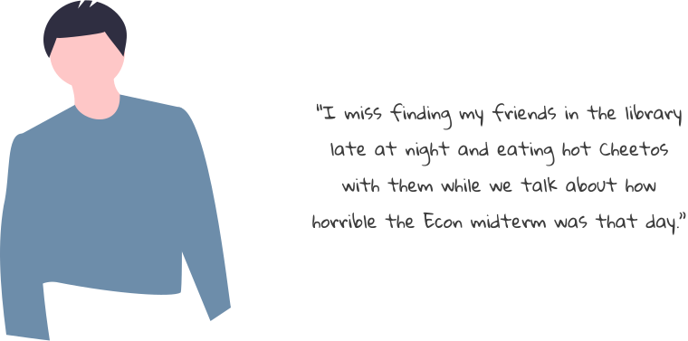
Pain point #2: Reaching out to people can feel inauthentic
The classic “let’s get a meal” conversation often feels more like a hallway greeting than an action item for people to follow up on. One of our users described the mass of “I miss you!” messages on Instagram as “inauthentic” given that many of them come from people who don’t regularly interact. Because these messages lack authenticity, it dissuades users from reaching out in the first place.
Pain point #3: Scheduling times to meet with friends is a pain
Even if our users are able to get over the hurdle of getting people to agree to an event, scheduling a time to host that event is a complete headache in itself. Our users used various methods to achieve this goal, from sending When2meets in group chats to texting every single person until they get a response. Oftentimes though, no one in the group takes the responsibility of planning the get-together, leading it once again to never occur.
How might we . . .
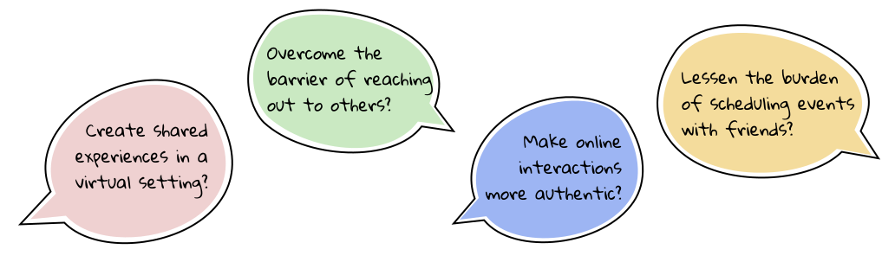
After our initial user interviews, we thought some more about the key obstacles our users were facing. We realized that the main pain point that we wanted to address was that our users felt they couldn’t create new memories with existing friends. This problem existed for our users both because of the remote environment and the complexities surrounding actually scheduling events. From here, we settled on our final HMW:
“When I’m gaming with my friends over Zoom, I don’t feel like we’re video calling just to catch up — it feels like we’re making
new memories together.”
This user described gaming with friends as one of the main ways he kept in touch with them while in isolation. It was interesting thow he had actually been able to create a shared experience with friends, even in this remote environment. He explained that gaming provides him and his friends with a common goal, as well as mutual experiences to talk about since they can chat about whatever is going on in the game. This anecdote inspired us to develop a solution around creating experiences similar to gaming. The key features we decided on for our app are:
- 1. Create a repertoire of activities that can be done virtually together
- 2. Match people with similar interests to do activities
- 3. Automatically schedule events between users based on calendar availability
Defining our principles
We decided on three main principles for our solution — convenience, simplicity, and delight. Based on user and industry research, we decided that these principles would address the main pain points of our users while keeping a seamless user experience.
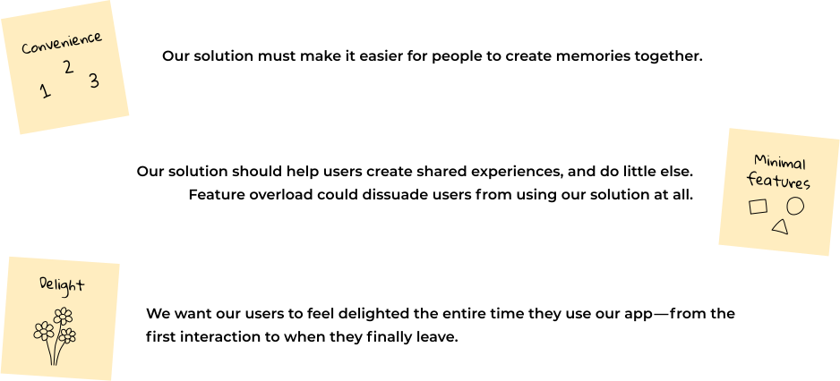
Sketches
We completed 3 rounds of sketches with our key features in mind. Through all of our sketches and low-fi wireframes, we wanted to make sure that our designs followed our laid out principles and allowed for a seamless and enjoyable experience for the users
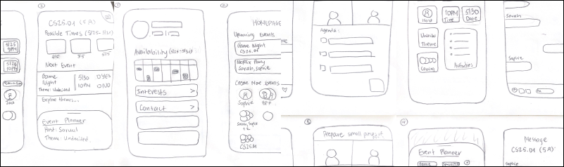
Sophie’s final sketches
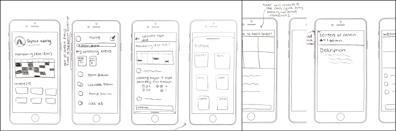
Saruul's final sketches
Key design decisions
As we continued to iterate screens, we realized that we would have to make some sacrifices in order to follow the principles we laid out. The hardest principle to keep in mind was minimal features, since we kept getting carried away by the numerous possibilities we could add to our app. The following three decision points guided our final product.
Decision #1: We decided against a navigation menu to simplify the user flow, instead using back arrows and modals
After conducting competitive research of other connectivity platforms, we realized that many of them contained a bottom menu bar for navigation. Since our app doesn’t have many distinct pages, we thought that having no navigation menu would greatly simplify the user flow.
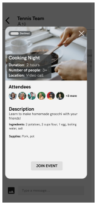
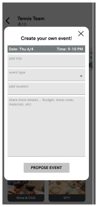
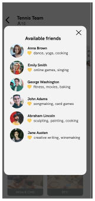
Decision #2: We used doodles and bright colors to create a delightful and playful experience for our users.
At the core, our app is a chat and scheduling platform, however we wanted to make interactions playful and engaging. As a result, we incorporated bright colors and icons into the scheduling interaction, to make users want to continue using our app.
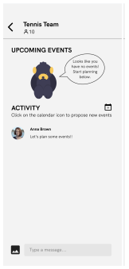
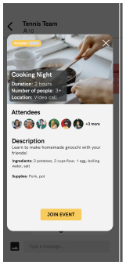
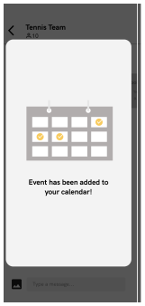
Decision #3: We chose a flat UI design to emphasize our app’s focus on functionality and efficency.
Because our designs include cards for upcoming events, we originally used drop shadows to indicate that these were clickable. However after user testing our app and talking with fellow designers, we realized that the drop shadows came across as “distracting” and “out of place.” Thus, we decided to go with a flat design for the entire interface in order to maintain simplicity.
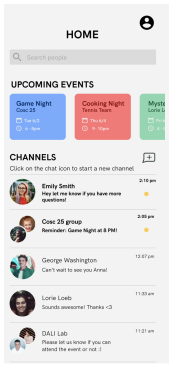
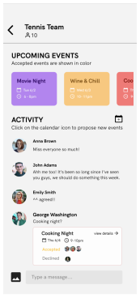
Our solution
Connect is a mobile planning app that provides opportunities for users to create meaningful memories with friends either online or in person. It automatically schedules times and proposes activities for friends to do based on their calendar availability. Below are our final designs - click here to access the full prototype.
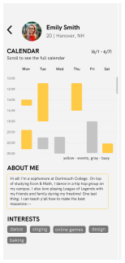
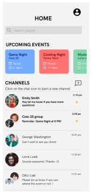
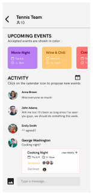
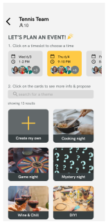
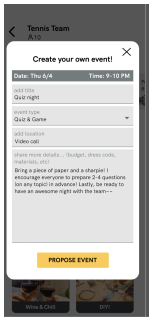
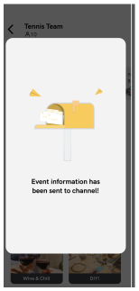
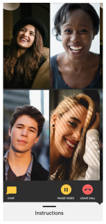
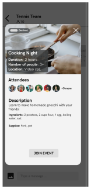